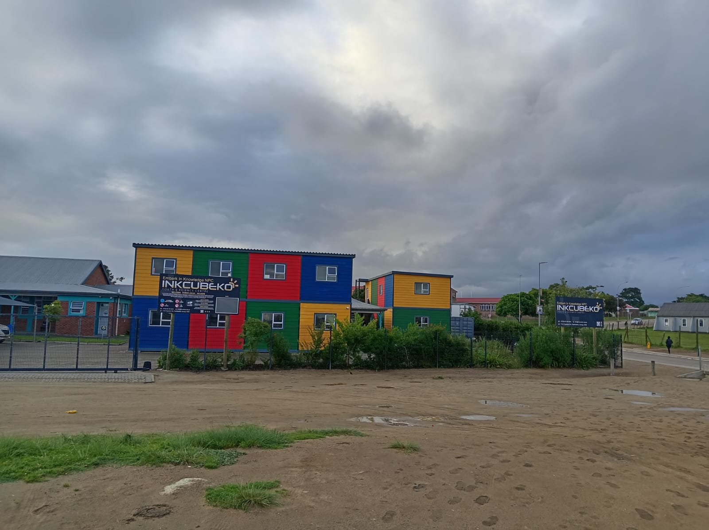
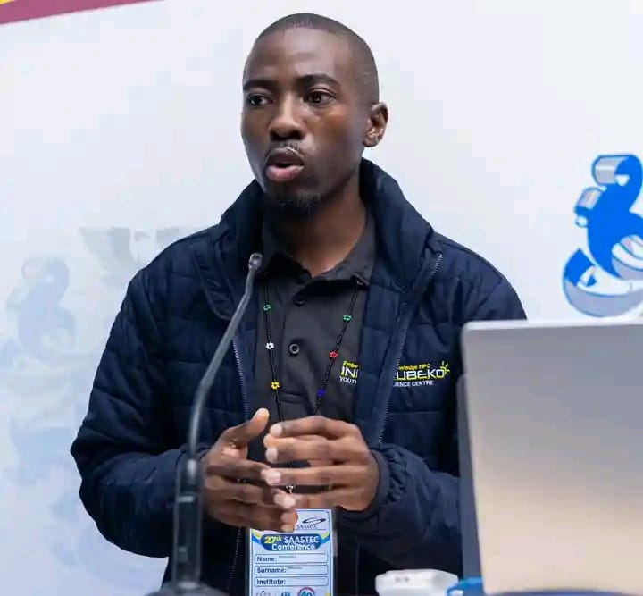

A little about me
Who is Lisolihle?
Me in the library

I'm Lisolihle, a poet, storyteller, and curious creative. I write about love, struggle, and identity, drawing on the many lives I've felt I've lived in a short time—and, sometimes, a weakness for heartbreak. I hope my words help readers feel seen and a little less alone.
I'm a free spirit and what I call a “nutrovert”: I enjoy a little bit of everything, as long as it feels right. In my spare time, you'll find me watching anime, reading manga, singing, or listening to almost every kind of music.
Teaching, creating, and learning
More about my work

At Inkcubeko Youth and Science Centre, I also contribute graphic design and technical support, and helped create the centre's first robotics website. I have also built tools to help the team record visitors to the centre.
My work

I work at Inkcubeko Youth and Science Centre as a facilitator, teaching and mentoring young people and adults in robotics and coding. I also teach computer classes, including the International Computer Driving Licence (ICDL), and help with administration.
I also support schools in George and Mossel Bay with Computer Applications Technology (CAT) for grades 10–12. At South Cape College, I tutor N4–N6 students in computer practice, sharing what I learned as a student myself.
I enjoy bringing creativity and technology together, and I'm always looking for new ways to learn and help others grow.